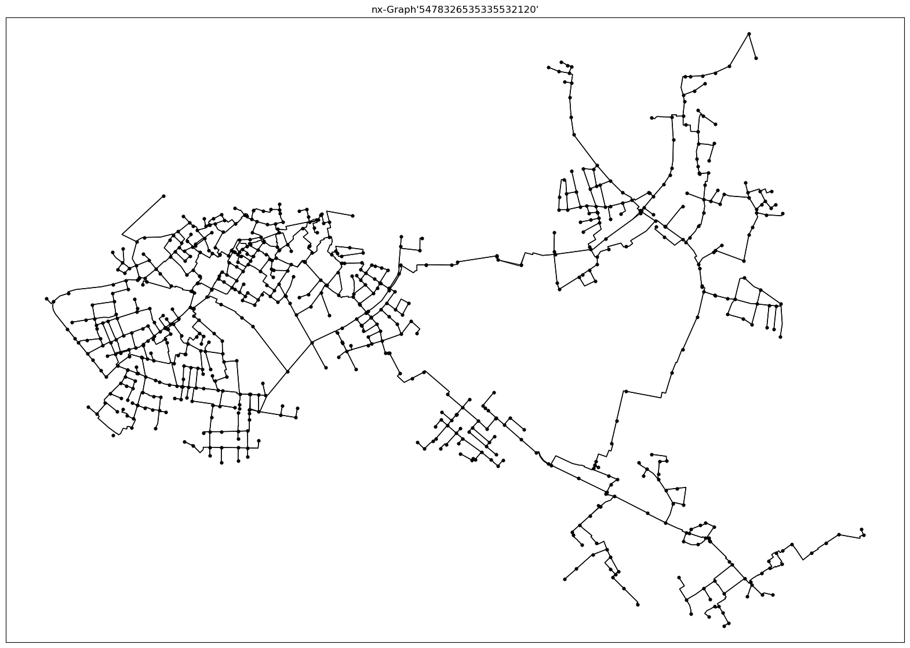

Example 4: nx-Graph
This example demonstrates how to use the SIR_3S_to_nx_graph() of the SIR 3S Toolkit to generate a nx-Graph based on a SIR 3S model.
SIR 3S Installation
[1]:
SIR3S_SIRGRAF_DIR = r"C:\3S\SIR 3S Entwicklung\SirGraf-90-15-00-19_x64"
Imports
Note: The SIR 3S Toolkit requires the Sir3S_Toolkit.dll included in SIR 3S installations (version Quebec and higher).
[2]:
import sir3stoolkit
The core of sir3stoolkit is a Python wrapper around basic functionality of SIR 3S, offering a low-level access to the creation, modification and simulation of SIR 3S models. In the future pure python subpackages may be added.
[3]:
from sir3stoolkit.core import wrapper
[4]:
from sir3stoolkit.mantle import mantle
[5]:
sir3stoolkit
[5]:
<module 'sir3stoolkit' from 'C:\\Users\\aUsername\\3S\\sir3stoolkit\\src\\sir3stoolkit\\__init__.py'>
The wrapper package has to be initialized with reference to a SIR 3S (SirGraf) installation.
[6]:
wrapper.Initialize_Toolkit(SIR3S_SIRGRAF_DIR)
Additional imports
[31]:
import os
import pandas as pd
import networkx as nx
import matplotlib.pyplot as plt
Initialization
[32]:
s3s = mantle.Mantle_SIR3S_Model()
Initialization complete
Open Model
[33]:
dbFilePath=r"C:\Users\aUsername\3S\Quebec_PT3S\Example5.db3"
[34]:
s3s.OpenModel(dbName=dbFilePath,
providerType=s3s.ProviderTypes.SQLite,
Mid="M-1-0-1",
saveCurrentlyOpenModel=False,
namedInstance="",
userID="",
password="")
Model is open for further operation
Generate nx Graph
[35]:
G=s3s.SIR_3S_to_nx_graph()
[2025-10-24 17:48:00,778] INFO in sir3stoolkit.mantle.alternative_models: [graph] Building nx graph...
[2025-10-24 17:48:00,781] INFO in sir3stoolkit.mantle.dataframes: [metadata] Generating metadata dataframe for element type: ObjectTypes.Node
[2025-10-24 17:48:00,785] INFO in sir3stoolkit.mantle.dataframes: [metadata] Retrieved 1559 element(s) of element type ObjectTypes.Node.
[2025-10-24 17:48:00,788] INFO in sir3stoolkit.mantle.dataframes: [Resolving Metadata Properties] No properties given → using ALL metadata properties for ObjectTypes.Node.
[2025-10-24 17:48:00,790] DEBUG in sir3stoolkit.mantle.dataframes: [Resolving Metadata Properties] Using 38 metadata properties.
[2025-10-24 17:48:00,791] INFO in sir3stoolkit.mantle.dataframes: [metadata] Retrieving metadata properties ['Name', 'Ktyp', 'Zkor', 'QmEin', 'Lfakt', 'Fkpzon', 'Fkfstf', 'Fkutmp', 'Fkfqps', 'Fkcont', 'Fk2lknot', 'Beschreibung', 'Idreferenz', 'Iplanung', 'Kvr', 'Qakt', 'Xkor', 'Ykor', 'NodeNamePosition', 'ShowNodeName', 'KvrKlartext', 'NumberOfVERB', 'HasBlockConnection', 'Tk', 'Pk', 'IsMarked', 'InVariant', 'GeometriesDiffer', 'SymbolFactor', 'bz.Drakonz', 'bz.Fk', 'bz.Fkpvar', 'bz.Fkqvar', 'bz.Fklfkt', 'bz.PhEin', 'bz.Tm', 'bz.Te', 'bz.PhMin'], geometry...
[2025-10-24 17:48:04,663] INFO in sir3stoolkit.mantle.dataframes: [metadata] 0 non-empty end node columns were created)
[2025-10-24 17:48:04,673] INFO in sir3stoolkit.mantle.dataframes: [metadata] Done. Shape: (1559, 40)
[2025-10-24 17:48:04,680] INFO in sir3stoolkit.mantle.alternative_models: [graph] Retrieved 1559 nodes.
[2025-10-24 17:48:04,682] INFO in sir3stoolkit.mantle.dataframes: [metadata] Generating metadata dataframe for element type: ObjectTypes.Pipe
[2025-10-24 17:48:04,686] INFO in sir3stoolkit.mantle.dataframes: [metadata] Retrieved 1672 element(s) of element type ObjectTypes.Pipe.
[2025-10-24 17:48:04,686] INFO in sir3stoolkit.mantle.dataframes: [Resolving Metadata Properties] No properties given → using ALL metadata properties for ObjectTypes.Pipe.
[2025-10-24 17:48:04,686] DEBUG in sir3stoolkit.mantle.dataframes: [Resolving Metadata Properties] Using 47 metadata properties.
[2025-10-24 17:48:04,686] INFO in sir3stoolkit.mantle.dataframes: [metadata] Retrieving metadata properties ['Name', 'FkdtroRowd', 'Fkltgr', 'Fkstrasse', 'L', 'Lzu', 'Rau', 'Jlambs', 'Lambda0', 'Zein', 'Zaus', 'Zuml', 'Asoll', 'Indschall', 'Baujahr', 'Hal', 'Fkcont', 'Fk2lrohr', 'Beschreibung', 'Idreferenz', 'Iplanung', 'Kvr', 'LineWidthMM', 'DottedLine', 'DN', 'Di', 'KvrKlartext', 'HasClosedNSCHs', 'Tk', 'Pk', 'IsMarked', 'InVariant', 'Xkor', 'Ykor', 'GeometriesDiffer', 'bz.Fk', 'bz.Qsvb', 'bz.Irtrenn', 'bz.Leckstatus', 'bz.Leckstart', 'bz.Leckend', 'bz.Leckort', 'bz.Leckmenge', 'bz.Imptnz', 'bz.Zvlimptnz', 'bz.Kantenzv', 'bz.ITrennWithNSCH'], geometry, end nodes...
[2025-10-24 17:48:11,068] INFO in sir3stoolkit.mantle.dataframes: [metadata] 2 non-empty end node columns were created)
[2025-10-24 17:48:11,080] INFO in sir3stoolkit.mantle.dataframes: [metadata] Done. Shape: (1672, 52)
[2025-10-24 17:48:11,083] INFO in sir3stoolkit.mantle.dataframes: [metadata] Generating metadata dataframe for element type: ObjectTypes.Valve
[2025-10-24 17:48:11,084] INFO in sir3stoolkit.mantle.dataframes: [metadata] Retrieved 119 element(s) of element type ObjectTypes.Valve.
[2025-10-24 17:48:11,086] INFO in sir3stoolkit.mantle.dataframes: [Resolving Metadata Properties] No properties given → using ALL metadata properties for ObjectTypes.Valve.
[2025-10-24 17:48:11,087] DEBUG in sir3stoolkit.mantle.dataframes: [Resolving Metadata Properties] Using 40 metadata properties.
[2025-10-24 17:48:11,087] INFO in sir3stoolkit.mantle.dataframes: [metadata] Retrieving metadata properties ['Name', 'Beschreibung', 'Dn', 'Typ', 'Indzeta', 'Zetapos', 'Zetaneg', 'Zetag', 'Fkzep2', 'Tsig', 'Thub', 'Indhub', 'Thub1', 'Thub2', 'Tpaus', 'Fkcont', 'Idreferenz', 'Iplanung', 'TypKlartext', 'IndzetaKlartext', 'Tk', 'Pk', 'IsMarked', 'InVariant', 'Xkor', 'Ykor', 'ShowDescription', 'PositionOfDescription', 'Angle', 'SymbolFactor', 'GeometriesDiffer', 'bz.Fk', 'bz.Indphi', 'bz.Phio', 'bz.Phig', 'bz.Phisoll', 'bz.Fkphi1', 'bz.Tiv', 'bz.IndPhiKonst', 'bz.IndphiKlartext'], geometry, end nodes...
[2025-10-24 17:48:11,501] INFO in sir3stoolkit.mantle.dataframes: [metadata] 2 non-empty end node columns were created)
[2025-10-24 17:48:11,506] INFO in sir3stoolkit.mantle.dataframes: [metadata] Done. Shape: (119, 45)
[2025-10-24 17:48:11,508] INFO in sir3stoolkit.mantle.dataframes: [metadata] Generating metadata dataframe for element type: ObjectTypes.SafetyValve
[2025-10-24 17:48:11,509] INFO in sir3stoolkit.mantle.dataframes: [metadata] Retrieved 0 element(s) of element type ObjectTypes.SafetyValve.
[2025-10-24 17:48:11,510] ERROR in sir3stoolkit.mantle.dataframes: [metadata] No elements exist of this element type ObjectTypes.SafetyValve.
[2025-10-24 17:48:11,513] INFO in sir3stoolkit.mantle.dataframes: [metadata] Generating metadata dataframe for element type: ObjectTypes.PressureRegulator
[2025-10-24 17:48:11,513] INFO in sir3stoolkit.mantle.dataframes: [metadata] Retrieved 0 element(s) of element type ObjectTypes.PressureRegulator.
[2025-10-24 17:48:11,515] ERROR in sir3stoolkit.mantle.dataframes: [metadata] No elements exist of this element type ObjectTypes.PressureRegulator.
[2025-10-24 17:48:11,517] INFO in sir3stoolkit.mantle.dataframes: [metadata] Generating metadata dataframe for element type: ObjectTypes.DifferentialRegulator
[2025-10-24 17:48:11,519] INFO in sir3stoolkit.mantle.dataframes: [metadata] Retrieved 0 element(s) of element type ObjectTypes.DifferentialRegulator.
[2025-10-24 17:48:11,519] ERROR in sir3stoolkit.mantle.dataframes: [metadata] No elements exist of this element type ObjectTypes.DifferentialRegulator.
[2025-10-24 17:48:11,520] INFO in sir3stoolkit.mantle.dataframes: [metadata] Generating metadata dataframe for element type: ObjectTypes.FlapValve
[2025-10-24 17:48:11,523] INFO in sir3stoolkit.mantle.dataframes: [metadata] Retrieved 5 element(s) of element type ObjectTypes.FlapValve.
[2025-10-24 17:48:11,524] INFO in sir3stoolkit.mantle.dataframes: [Resolving Metadata Properties] No properties given → using ALL metadata properties for ObjectTypes.FlapValve.
[2025-10-24 17:48:11,524] DEBUG in sir3stoolkit.mantle.dataframes: [Resolving Metadata Properties] Using 23 metadata properties.
[2025-10-24 17:48:11,526] INFO in sir3stoolkit.mantle.dataframes: [metadata] Retrieving metadata properties ['Name', 'Beschreibung', 'Dn', 'Fkphiv', 'Fkzep2', 'Ts', 'Phie', 'Te', 'Fkcont', 'Idreferenz', 'Iplanung', 'Tk', 'Pk', 'IsMarked', 'InVariant', 'Xkor', 'Ykor', 'ShowDescription', 'PositionOfDescription', 'Angle', 'SymbolFactor', 'GeometriesDiffer', 'bz.Fk'], geometry, end nodes...
[2025-10-24 17:48:11,534] INFO in sir3stoolkit.mantle.dataframes: [metadata] 2 non-empty end node columns were created)
[2025-10-24 17:48:11,551] INFO in sir3stoolkit.mantle.dataframes: [metadata] Done. Shape: (5, 28)
[2025-10-24 17:48:11,568] INFO in sir3stoolkit.mantle.dataframes: [metadata] Generating metadata dataframe for element type: ObjectTypes.PhaseSeparation
[2025-10-24 17:48:11,568] INFO in sir3stoolkit.mantle.dataframes: [metadata] Retrieved 0 element(s) of element type ObjectTypes.PhaseSeparation.
[2025-10-24 17:48:11,568] ERROR in sir3stoolkit.mantle.dataframes: [metadata] No elements exist of this element type ObjectTypes.PhaseSeparation.
[2025-10-24 17:48:11,572] INFO in sir3stoolkit.mantle.dataframes: [metadata] Generating metadata dataframe for element type: ObjectTypes.FlowControlUnit
[2025-10-24 17:48:11,575] INFO in sir3stoolkit.mantle.dataframes: [metadata] Retrieved 0 element(s) of element type ObjectTypes.FlowControlUnit.
[2025-10-24 17:48:11,576] ERROR in sir3stoolkit.mantle.dataframes: [metadata] No elements exist of this element type ObjectTypes.FlowControlUnit.
[2025-10-24 17:48:11,576] INFO in sir3stoolkit.mantle.dataframes: [metadata] Generating metadata dataframe for element type: ObjectTypes.ControlValve
[2025-10-24 17:48:11,581] INFO in sir3stoolkit.mantle.dataframes: [metadata] Retrieved 1 element(s) of element type ObjectTypes.ControlValve.
[2025-10-24 17:48:11,584] INFO in sir3stoolkit.mantle.dataframes: [Resolving Metadata Properties] No properties given → using ALL metadata properties for ObjectTypes.ControlValve.
[2025-10-24 17:48:11,584] DEBUG in sir3stoolkit.mantle.dataframes: [Resolving Metadata Properties] Using 22 metadata properties.
[2025-10-24 17:48:11,584] INFO in sir3stoolkit.mantle.dataframes: [metadata] Retrieving metadata properties ['Name', 'Beschreibung', 'Dn', 'Fkzep1', 'Fkcont', 'Thub', 'Idreferenz', 'Iplanung', 'OnlStrgString', 'Tk', 'Pk', 'IsMarked', 'InVariant', 'Xkor', 'Ykor', 'ShowDescription', 'PositionOfDescription', 'Angle', 'SymbolFactor', 'GeometriesDiffer', 'bz.Fk', 'bz.Fkrart'], geometry, end nodes...
[2025-10-24 17:48:11,592] INFO in sir3stoolkit.mantle.dataframes: [metadata] 2 non-empty end node columns were created)
[2025-10-24 17:48:11,599] INFO in sir3stoolkit.mantle.dataframes: [metadata] Done. Shape: (1, 27)
[2025-10-24 17:48:11,599] INFO in sir3stoolkit.mantle.dataframes: [metadata] Generating metadata dataframe for element type: ObjectTypes.Pump
[2025-10-24 17:48:11,601] INFO in sir3stoolkit.mantle.dataframes: [metadata] Retrieved 3 element(s) of element type ObjectTypes.Pump.
[2025-10-24 17:48:11,610] INFO in sir3stoolkit.mantle.dataframes: [Resolving Metadata Properties] No properties given → using ALL metadata properties for ObjectTypes.Pump.
[2025-10-24 17:48:11,610] DEBUG in sir3stoolkit.mantle.dataframes: [Resolving Metadata Properties] Using 123 metadata properties.
[2025-10-24 17:48:11,610] INFO in sir3stoolkit.mantle.dataframes: [metadata] Retrieving metadata properties ['Name', 'Beschreibung', 'Fkpumk', 'Fkpumkturb', 'Qmref', 'Nref', 'Href', 'Pref', 'Qmrefturb', 'Nrefturb', 'Hrefturb', 'Prefturb', 'Nmin', 'Nmax', 'Q0min', 'Q0max', 'Fkkref1', 'Fkkref2', 'Jwirk', 'Traeg', 'Jrlsp', 'Dndtma', 'Indl', 'Fketam', 'Fketau', 'Fketar', 'Nemot', 'Etamot', 'Schlupf', 'Bkfak', 'Tsig', 'Dndt', 'Ntrudel', 'Dngross', 'Dnklein', 'Dt0aus', 'Indasf', 'Wscasf', 'Fkkiasf', 'Totasf', 'Wirasf', 'Indaps', 'Psa', 'Fkkiaps', 'Totaps', 'Indapd', 'Papd', 'Fkkiapd', 'Totapd', 'Fkcont', 'Dt0sch', 'Indds', 'Pdsein', 'Fkkrsspd', 'Kpds', 'Kids', 'Kdds', 'Indss', 'Pssein', 'Fkkrssps', 'Kpss', 'Kiss', 'Kdss', 'Indstf', 'Wscstf', 'Fkkr1stf', 'Wirstf', 'Kpstf', 'Kistf', 'Kdstf', 'Indstd', 'Ifgsw', 'Wsostd', 'Fkkr3std', 'Fkkr4std', 'Wirstd', 'Kpstd', 'Kistd', 'Kdstd', 'Dt0std', 'Idreferenz', 'Iplanung', 'PerformanceMapParameters', 'BKFaktTubine', 'EtaRef', 'EtaRefTurb', 'IndLTurb', 'NMaxTurb', 'NMinTurb', 'Q0MaxTurb', 'Q0MinTurb', 'PukfString', 'Tk', 'Pk', 'IsMarked', 'InVariant', 'Xkor', 'Ykor', 'ShowDescription', 'PositionOfDescription', 'Angle', 'SymbolFactor', 'GeometriesDiffer', 'bz.Fk', 'bz.Inds', 'bz.Indturb', 'bz.Ispu', 'bz.Isputurb', 'bz.Qmsoll', 'bz.Nsoll', 'bz.Qmsollturb', 'bz.Nsollturb', 'bz.Phsoll', 'bz.Fkrcpl', 'bz.Inda', 'bz.Tipu', 'bz.Fkpumd', 'bz.Fkswvt', 'bz.IndATurb', 'bz.IndSTurb', 'bz.IndsKlartext', 'bz.IndaKlartext', 'bz.IspuKlartext'], geometry, end nodes...
[2025-10-24 17:48:11,651] INFO in sir3stoolkit.mantle.dataframes: [metadata] 2 non-empty end node columns were created)
[2025-10-24 17:48:11,665] INFO in sir3stoolkit.mantle.dataframes: [metadata] Done. Shape: (3, 128)
[2025-10-24 17:48:11,668] INFO in sir3stoolkit.mantle.dataframes: [metadata] Generating metadata dataframe for element type: ObjectTypes.DistrictHeatingConsumer
[2025-10-24 17:48:11,669] INFO in sir3stoolkit.mantle.dataframes: [metadata] Retrieved 656 element(s) of element type ObjectTypes.DistrictHeatingConsumer.
[2025-10-24 17:48:11,672] INFO in sir3stoolkit.mantle.dataframes: [Resolving Metadata Properties] No properties given → using ALL metadata properties for ObjectTypes.DistrictHeatingConsumer.
[2025-10-24 17:48:11,673] DEBUG in sir3stoolkit.mantle.dataframes: [Resolving Metadata Properties] Using 56 metadata properties.
[2025-10-24 17:48:11,674] INFO in sir3stoolkit.mantle.dataframes: [metadata] Retrieving metadata properties ['Name', 'Beschreibung', 'Ind0', 'W0', 'Qm0', 'Tvl0', 'Trs0', 'Lfk', 'Rho0', 'Dtmin', 'Indtr', 'Trsk', 'Fktrft', 'A', 'B', 'C', 'Vtyp', 'V0', 'P1soll', 'Dpvlmin', 'Fkzep1vl', 'Tsvl', 'Zevk', 'Dphaus', 'Dprlmin', 'Fkzep1rl', 'Tsrl', 'Imbg', 'Irfv', 'Fkcont', 'Idreferenz', 'Iplanung', 'CPM', 'NumberOfVERB', 'IndtrKlartext', 'M0Estimated', 'W0Estimated', 'Tk', 'Pk', 'IsMarked', 'InVariant', 'Xkor', 'Ykor', 'ShowDescription', 'PositionOfDescription', 'Angle', 'SymbolFactor', 'GeometriesDiffer', 'bz.Fk', 'bz.Indlast', 'bz.Indlfkt2', 'bz.Fklfkt', 'bz.Fklfkt2', 'bz.Fkqvar', 'bz.Fktevt', 'bz.IndlastKlartext'], geometry, end nodes...
[2025-10-24 17:48:16,165] INFO in sir3stoolkit.mantle.dataframes: [metadata] 2 non-empty end node columns were created)
[2025-10-24 17:48:16,179] INFO in sir3stoolkit.mantle.dataframes: [metadata] Done. Shape: (656, 61)
[2025-10-24 17:48:16,181] INFO in sir3stoolkit.mantle.dataframes: [metadata] Generating metadata dataframe for element type: ObjectTypes.DistrictHeatingFeeder
[2025-10-24 17:48:16,183] INFO in sir3stoolkit.mantle.dataframes: [metadata] Retrieved 2 element(s) of element type ObjectTypes.DistrictHeatingFeeder.
[2025-10-24 17:48:16,187] INFO in sir3stoolkit.mantle.dataframes: [Resolving Metadata Properties] No properties given → using ALL metadata properties for ObjectTypes.DistrictHeatingFeeder.
[2025-10-24 17:48:16,188] DEBUG in sir3stoolkit.mantle.dataframes: [Resolving Metadata Properties] Using 29 metadata properties.
[2025-10-24 17:48:16,190] INFO in sir3stoolkit.mantle.dataframes: [metadata] Retrieving metadata properties ['Name', 'Beschreibung', 'Dn', 'Zeta', 'Taus', 'Irueck', 'Fkcont', 'Idreferenz', 'Iplanung', 'Tk', 'Pk', 'IsMarked', 'InVariant', 'Xkor', 'Ykor', 'ShowDescription', 'PositionOfDescription', 'Angle', 'SymbolFactor', 'GeometriesDiffer', 'bz.Fk', 'bz.Ihytyp', 'bz.Ithtyp', 'bz.Tkon', 'bz.Fktevt', 'bz.Wkon', 'bz.Fkwevt', 'bz.IhytypKlartext', 'bz.IthtypKlartext'], geometry, end nodes...
[2025-10-24 17:48:16,203] INFO in sir3stoolkit.mantle.dataframes: [metadata] 2 non-empty end node columns were created)
[2025-10-24 17:48:16,209] INFO in sir3stoolkit.mantle.dataframes: [metadata] Done. Shape: (2, 34)
[2025-10-24 17:48:16,214] INFO in sir3stoolkit.mantle.dataframes: [metadata] Generating metadata dataframe for element type: ObjectTypes.Compressor
[2025-10-24 17:48:16,214] INFO in sir3stoolkit.mantle.dataframes: [metadata] Retrieved 0 element(s) of element type ObjectTypes.Compressor.
[2025-10-24 17:48:16,217] ERROR in sir3stoolkit.mantle.dataframes: [metadata] No elements exist of this element type ObjectTypes.Compressor.
[2025-10-24 17:48:16,220] INFO in sir3stoolkit.mantle.dataframes: [metadata] Generating metadata dataframe for element type: ObjectTypes.HeaterCooler
[2025-10-24 17:48:16,222] INFO in sir3stoolkit.mantle.dataframes: [metadata] Retrieved 0 element(s) of element type ObjectTypes.HeaterCooler.
[2025-10-24 17:48:16,223] ERROR in sir3stoolkit.mantle.dataframes: [metadata] No elements exist of this element type ObjectTypes.HeaterCooler.
[2025-10-24 17:48:16,224] INFO in sir3stoolkit.mantle.dataframes: [metadata] Generating metadata dataframe for element type: ObjectTypes.HeatExchanger
[2025-10-24 17:48:16,230] INFO in sir3stoolkit.mantle.dataframes: [metadata] Retrieved 0 element(s) of element type ObjectTypes.HeatExchanger.
[2025-10-24 17:48:16,232] ERROR in sir3stoolkit.mantle.dataframes: [metadata] No elements exist of this element type ObjectTypes.HeatExchanger.
[2025-10-24 17:48:16,234] INFO in sir3stoolkit.mantle.dataframes: [metadata] Generating metadata dataframe for element type: ObjectTypes.HeatFeederConsumerStation
[2025-10-24 17:48:16,237] INFO in sir3stoolkit.mantle.dataframes: [metadata] Retrieved 0 element(s) of element type ObjectTypes.HeatFeederConsumerStation.
[2025-10-24 17:48:16,238] ERROR in sir3stoolkit.mantle.dataframes: [metadata] No elements exist of this element type ObjectTypes.HeatFeederConsumerStation.
[2025-10-24 17:48:16,240] INFO in sir3stoolkit.mantle.dataframes: [metadata] Generating metadata dataframe for element type: ObjectTypes.RART_ControlMode
[2025-10-24 17:48:16,242] INFO in sir3stoolkit.mantle.dataframes: [metadata] Retrieved 0 element(s) of element type ObjectTypes.RART_ControlMode.
[2025-10-24 17:48:16,243] ERROR in sir3stoolkit.mantle.dataframes: [metadata] No elements exist of this element type ObjectTypes.RART_ControlMode.
[2025-10-24 17:48:16,301] INFO in sir3stoolkit.mantle.alternative_models: [graph] Retrieved 2458 edges from 17 element types.
[2025-10-24 17:48:16,301] INFO in sir3stoolkit.mantle.alternative_models: [graph] Adding nodes to graph...
[2025-10-24 17:48:16,684] INFO in sir3stoolkit.mantle.alternative_models: [graph] Adding edges to graph...
[2025-10-24 17:48:18,088] INFO in sir3stoolkit.mantle.alternative_models: [graph] Graph construction complete. Nodes: 1559, Edges: 2457
View generated Graph
[36]:
node_attrs = {n: data for n, data in G.nodes(data=True)}
[38]:
edge_attrs = {(u, v): data for u, v, data in G.edges(data=True)}
[40]:
nx.is_weakly_connected(G) # Is connected as an undirected graph
[40]:
True
[41]:
def plot_nx_graph(G, main_container):
# Extract node positions from geometry and filter by Fkcont
pos = {
node_id: (data['geometry'].x, data['geometry'].y)
for node_id, data in G.nodes(data=True)
if 'geometry' in data and hasattr(data['geometry'], 'x') and hasattr(data['geometry'], 'y')
and data.get('Fkcont') == main_container
}
# Extract edges with valid geometry and both nodes in pos
edges = [
(u, v, data) for u, v, data in G.edges(data=True)
if u in pos and v in pos and 'geometry' in data and data['geometry'].geom_type != 'Point'
]
# Plot
plt.figure(figsize=(20, 14))
for _, _, data in edges:
geom = data['geometry']
x, y = geom.xy
plt.plot(x, y, color='black', linewidth=1)
# Only draw nodes that have positions
nx.draw_networkx_nodes(G, pos=pos, nodelist=list(pos.keys()), node_color='black', node_size=10)
plt.title(f"nx-Graph'{main_container}'")
plt.axis('equal')
plt.show()
[42]:
plot_nx_graph(G, s3s.GetMainContainer()[0])
